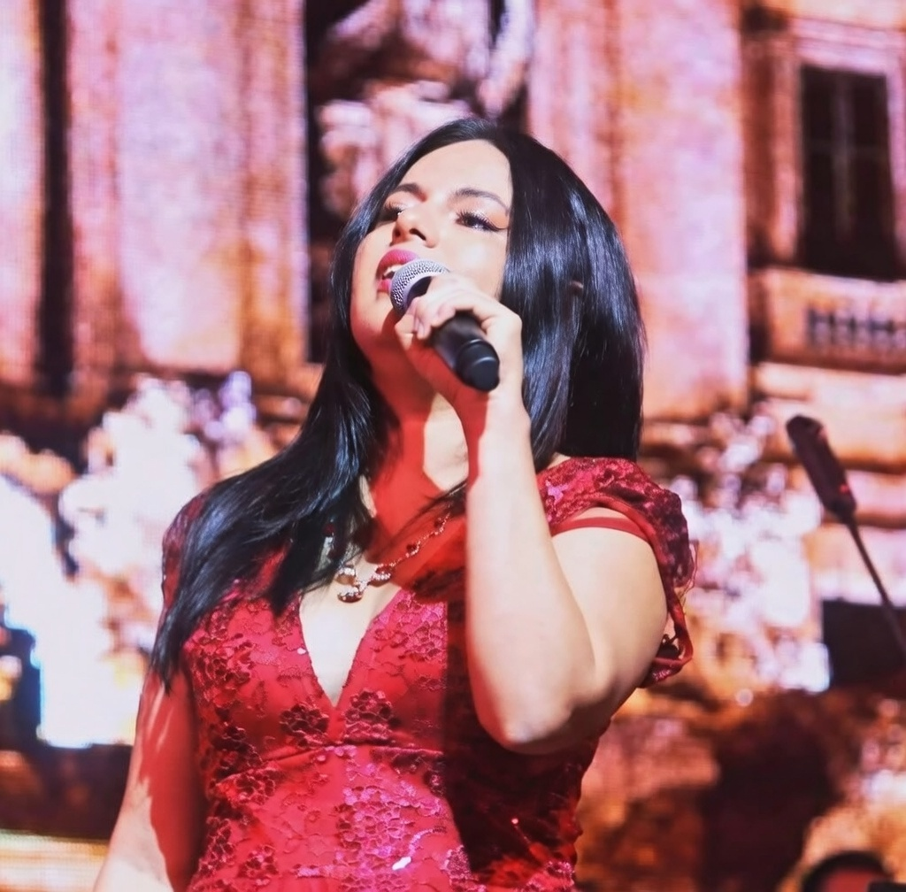

Beatriz Quiceno Valencia
Graduada de la Universidad del Valle en pregrado en Música con grado Meritorio y beca de estudio durante sus años de permanencia. Durante su carrera fue motivada por los mismos maestros de canto a estudiar la carrera en canto lírico debido a sus dotes para este, obteniendo su cupo en las clases de técnica vocal y repertorio con la Maestra Emperatriz Figueroa.
Se especializa en Canto Lírico y popular, entusiasta por colaborar y desarrollar sonidos. Tiene la capacidad de acompañar y aprender las melodías y armonía de piezas musicales de forma rápida y precisa para maximizar el aporte al éxito en el alumno. Sus instrumentos de acompañamiento son el Piano y la Guitarra, teniendo experiencia en música española, italiana, francesa, americana y clásica.
Su método de enseñanza se ha desarrollado por 20 años de docencia. Parte de su método es enseñar a leer partituras simples para una mejor primera vista, memorizar letras, cantar piezas desde básicas hasta complejas y mantener una conducta profesional en el escenario.
Trayectoria Artística
Ha participado en Óperas como:
- Giannetta – Elixir de Amor
- Annina – La Traviata
- Serpina – La Serva Padrona
- Mercedes y Frasquita – Carmen de Bizet
- Lucia de Lammermoor – Donizetti
- Cosí fan tutte – Mozart
- Orfeo – Monteverdi
- Dido y Eneas
- Zarzuelas
En el año 2005 y 2006 participa en el Taller Binacional de Ópera realizado en Ecuador donde tuvo oportunidad de recibir clases magistrales. También participó en otros escenarios como el documental Apaporis en el 2010, en los montajes “De regreso a mi tierra” de la Fundación del Artista Colombiano y en óperas shows realizadas en la ciudad.
Ha sido invitada por la Banda Departamental del Valle como solista bajo la dirección del Maestro Remo Ceccato de Italia.
Clases Magistrales Internacionales
- Patricia Fleitas – Highland Beach, Florida
- Maikai Nash – Hawái
- Alejandro Roca – Colombia
- Hans Mogollón – Colombia
- Beatriz Parra – Ecuador
- Juan Carlos Mera Euler – Alemania
- Angelique Zuluaga – San José, California
- Álamo College – San Antonio, Texas
Canto Popular y Voz Profesional
En el campo del canto popular, maneja un repertorio amplio de música latinoamericana e hispanoamericana, géneros tradicionales y modernos como boleros, música pop-rock y géneros contemporáneos.
Como parte profesional ha recibido entrenamiento e investigación de la voz hablada y cantada, incluyendo rehabilitación de trastornos de la voz en profesionales como cantantes, actores, locutores, oradores y profesores.
Investigación y Desarrollo Escénico
En la Facultad de Artes Integradas participó en el taller del Grupo de Investigación en Música de canto para estudiantes y formación musical – GRIM para alumnos avanzados por el Maestro Juan Carlos Mera Euler de Alemania (2009), donde se trabajó la expresión corporal y puesta en escena.
Actualmente hace parte del Grupo Musical Loyola, participando en escenarios como el Teatro Materón, Instituciones Universitarias, Tecnoquímicas y Teatro Municipal, entre otros, como solista principal.
Habilidades
- Maestra de Técnica Vocal en repertorio lírico y popular, solistas y coros.
- Métodos didácticos y efectivos del canto europeo y americano.
- Habilidad interpersonal.
- Interpretación.
- Docencia.
- Musicoterapia.
Certificaciones
- Pregrado en Maestra en Música – Universidad del Valle (Beca de estudio y Grado Meritorio).
- Máster en Musicoterapia – Escuela Europea Des Arts, Lleida – España.
- Taller de fonoaudiología para cantantes, actores y conferencistas – Marco Guzmán (Chile, 2010).
- Grupo de Investigación en Música – GRIM. Maestro Juan Carlos Mera Euler (Alemania, 2009). Trabajo de expresión corporal y puesta en escena.
Educación
- Beneficiaria Beca Colfuturo – 2027.
- Escuela Europea Des Arts – Maestría internacional en Especialista en Musicoterapia. Lleida, España • 06/2023.
- Master Classes – Texas, Florida, New York • 02/2014. Associate of Arts: Master Classes in Singing and Music.
- Universidad del Valle – Cali, Colombia • 02/2010. Pregrado: Maestra en Música (Beca de estudio y Grado Meritorio).
Experiencia Laboral
Instituto Departamental de Bellas Artes
Cargo: Maestra de canto lírico y trabajo de fonética y estilo.
Jefe: Hans Mogollón
Funciones: Profesora de Canto lírico.
Teléfono: 316 824 3962
Duración: 2020 – 2023
Universidad Santiago de Cali
Cargo: Maestra del curso de Técnica Vocal y Ensamble vocal.
Jefe: Roberto Robles
Funciones: Profesora de Técnica vocal.
Teléfono: 3184094315
Duración: 2016 – 2020
Instituto CanZión Cali
Profesora de canto – Iglesia Fe y Esperanza.
Jefe: Ary Álvarez
Funciones: Manejo de la respiración, dicción, proyección de la voz, manejo de la voz en público e interpretación.
Duración: Enero 2015 – 2017
Teléfono: 3166964714
Amazing Grace Hispanic Ministries
Ensamble Vocal para ministerios – Plantation, Florida, Estados Unidos.
Jefe: Guillermo Hernández
Funciones: Manejo de la voz cantada, hablada, narración oral y fonética.
Duración: 2014
Teléfono: 1-7544225193
Hogar Gerontológico Las Acacias
Cargo: Musicoterapia.
Funciones: Terapia musical grupal para facilitar y promover comunicación, relaciones, aprendizaje, movimiento, expresión y objetivos terapéuticos físicos, emocionales, mentales y sociales.
Lugar: Avenida Inés Lara, Cali.
Jefe: Fabián Quiceno Cadavid
Teléfono: 320 777 8664
Profesora de Fonética
Virtual – 02/2019 – Actualmente.
Desarrollo de planes de lecciones innovadores para aprendizaje de español e inglés.
Diseño e implementación de evaluaciones para medir progreso académico.